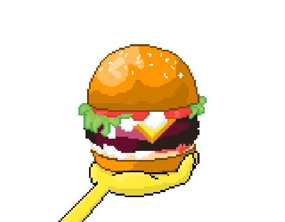

Krabby Patty

A Krabby Patty is a delicious hamburger from "SpongeBob SquarePants" made with krab meat, secret condiments, and fresh toppings. It's the signature dish of the Krusty Krab restaurant in Bikini Bottom.
Ingredients
- 1 pound ground beef (or substitute with your favorite meat or plant-based patty)
- 1 egg
- 1/4 cup bread crumbs
- 1/4 cup finely chopped onions
- 1 teaspoon mustard
- 1 teaspoon Worcestershire sauce
- Salt and pepper to taste
- Sliced cheese (e.g., cheddar or American)
- Fresh lettuce leaves
- Sliced tomatoes
- Sliced pickles
- Sesame seed buns
Secret Sauce:
- 1/2 cup mayonnaise
- 2 tablespoons ketchup
- 1 tablespoon sweet pickle relish
- 1 teaspoon white vinegar
- 1/2 teaspoon sugar
- 1/2 teaspoon onion powder
- 1/2 teaspoon garlic powder
- A pinch of salt and pepper
Steps
- In a mixing bowl, combine the ground beef, egg, bread crumbs, chopped onions, mustard, Worcestershire sauce, salt, and pepper. Mix well until all the ingredients are evenly incorporated.
- Shape the meat mixture into burger patties, making sure they are flat and even for even cooking.
- Preheat your grill or stovetop pan to medium-high heat. Cook the patties for about 4-5 minutes on each side or until they reach your desired level of doneness.
- During the last minute of cooking, place a slice of cheese on top of each patty to melt.
- While the patties cook, prepare the Secret Sauce. In a bowl, mix together all the Secret Sauce ingredients until well combined.
- Toast the sesame seed buns lightly to add some extra flavor and texture.
- To assemble the Krabby Patty, spread the Secret Sauce on the bottom half of the bun. Add a cooked patty with melted cheese on top.
- Layer fresh lettuce leaves, sliced tomatoes, and pickles on top of the patty.
- Finish it off with the top half of the bun.
- Serve your Homemade Krabby Patty with your favorite side dishes, and enjoy this tasty homage to the iconic dish from Bikini Bottom!